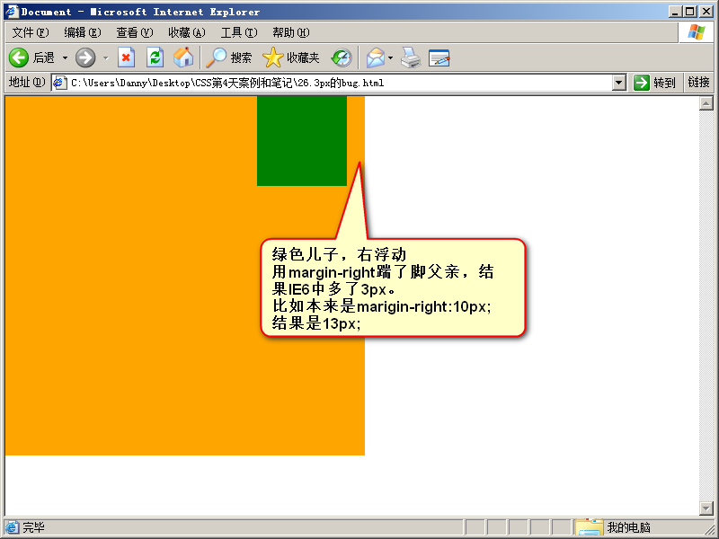

石婉茹
我的名字：石婉茹
QQ:2829339528
wechat:ww28052
敢问路在何方&&路在脚下
95后/本科在读/轻生活/轻梦想
石婉茹
我的名字：石婉茹
QQ:2829339528
wechat:ww28052
敢问路在何方&&路在脚下
95后/本科在读/轻生活/轻梦想
IE6，不支持小于12px的盒子，任何小于12px的盒子，在IE6中看都大
将盒子的字号，设置小（小于盒子的高）
例如：height:4px;_font-size:0px;
只要给css属性之前，加上下划线，这个属性就是IE6认识的专有属性
浏览器hack。hack就是“黑客”，就是使用浏览器提供的后门，针对某一种浏览器做兼容。
css属性之前，加上下划线——IE6专有属性
css属性之前，加上-webkit-——Chrome和Safari的专有属性
css属性之前，加上-moz-——Firefox的专有属性
css属性之前，加上-ms-——IE的专有属性
css属性之前，加上-o-——Opera的专有属性
以毒攻毒，追加一条_zoom:1;
完整写法1overflow: hidden;_zoom:1;
实际上，_zoom:1;能够触发浏览器hasLayout机制
hasLayout属性是微软特有的过时属性，在IE8、IE9中，hasLayout属性已经被废弃。
haslayout 是Windows Internet Explorer渲染引擎的一个内部组成部分。在InternetExplorer中，一个元素要么自己对自身的内容进行计算大小和组织，要么依赖于父元素来计算尺寸和组织内容。为了调节这两个不同的概念，渲染引擎采用了 hasLayout 的属性，属性值可以为true或false。当一个元素的 hasLayout属性值为true时，我们说这个元素有一个布局(layout)
如果它设置成了true，它就不得不去渲染它自己，因此元素不得不扩展去包含它的流出的内容。例如浮动或者很长很长的没有截断的单词，如果haslayout被设置成非true，那么元素得依靠某个祖先元素来渲染它。这就是很多的ie bugs诞生的地方。
这两个IE6的兼容问题，都是通过多写一条hack来解决的，称为伴生属性。
如，height:6px;_font-size:0;
如，overflow:hidden;_zoom:1;
当出现连续浮动的元素，携带和浮动方向相同的margin时，队首的元素，会双倍marign。
<1>使浮动的方向和margin的方向，相反
<2>使用hack,单独给队首的元素，写一个一半的margin

不用管，因为根本就不允许用儿子踹父亲。所以，如果你出现了3px bug，说明你的代码不标准